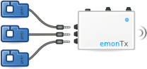

Electricity monitoring application note
This page accompanies the main openenergymonitor guide. This page details application specific notes for electricity monitoring.
Both the EmonPi or the EmonTx+Emonbase configuration can provide a good home energy monitoring solution depending on your requirements, see main setup guide for differences.
There are two main configurations for electricity monitoring:
Current only
Measuring current (IRMS) only, is comparable to many, if not most, of the home electricity monitors available. The only sensor needed is a CT that clips around the mains wire coming into the house. The sensor is called a current transformer. For an explanation for how they work see CT sensors - Introduction.
Power is calculated by multiplying the current measurement (RMS current) with a fixed voltage value (i.e 230V). This particular type of power measurement is called Apparent Power, and is different from the power measurement utility companies bill you for, which is called Real Power. AC Power is a complex subject. To learn more, read An introduction to AC Power.
Voltage and current (Highly Recommended)
By measuring mains voltage (VRMS) as well as current, it's possible to calculate Real Power in addition to other quantities. (Apparent Power, RMS Voltage, RMS Current). Measuring voltage as well as current is better both in terms of the measurement representing what the power company bills you for, accuracy at low power levels.
To measure mains voltage safely, we use a standard AC to AC power adapter that steps down and isolates the mains Voltage. See Building Blocks section: Measuring AC Voltage with an AC to AC power adapter
The decision whether to monitor mains voltage or not, often comes down to: Is there is a AC socket near the electricity meter cabinet?
At this point, it may be useful to review the CT and AC power adapter installation and calibration theory page.
The emonTx V3 can be powered from the same 9V AC-AC Adapter used for AC Voltage measurement.
Due to the increased power requirement, the emonPi requires an additional 5V DC USB power supply
Get started: Set up a system